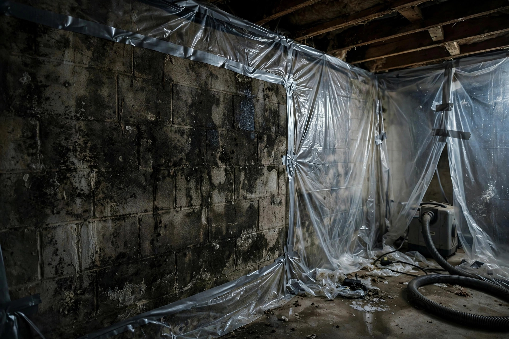

Basement mold remediation that starts at the foundation
Basements collect every moisture problem a house has: groundwater pressure, condensation on cool walls, slow plumbing seeps. Remediation here means treating the wall system, not just the stain.
A Tuscany storage wall that hid a season of growth
Boxes of holiday decorations sat against a below-grade wall for two years. When the homeowner finally moved them, the drywall behind was blotched black from floor to waist height. Irrigation-season moisture had wicked through the concrete for months, feeding mold on the paper facing where no air circulated. The fix was a clean cut of the lower drywall, cavity drying, and a new storage layout that keeps everything six inches off the wall.
Sources: EPA — Mold, Moisture & Your Home CDC — Mold and Health
Why Meridian basements grow mold
Local patterns we see again and again.
Irrigation-season groundwater
The Settlers Canal system keeps the water table high from spring through fall. Homes near laterals — including parts of Paramount — can see hydrostatic pressure push moisture through foundation walls and floor joints.
Daylight basement design
Many Meridian homes use walkout or daylight basements on sloped lots. The below-grade portion stays cool while the exposed portion warms, and condensation forms where the two meet inside wall cavities.
Stored belongings blocking airflow
Basements become warehouses: boxes stacked tight against exterior walls trap humid air with nowhere to go. Mold starts behind the boxes months before anyone notices.
Three basement zones, three different fixes
Where the mold sits decides how we approach it.
Poured concrete walls
Common in Meridian's newer builds around Tuscany. Concrete wicks moisture from soil; mold grows on the dust and organic film coating the surface. HEPA vacuuming plus antimicrobial treatment usually suffices — the wall itself stays.
Finished wall cavities
Drywall over studs traps humidity against the cool concrete behind it. Once mold colonizes the paper facing and insulation, that section comes out. We cut cleanly, bag the waste, and dry the cavity before rebuilding.
Sump and utility corners
The dampest square footage in the house. Standing water, efflorescence, and organic debris make these corners mold factories. Cleanup pairs with drainage advice so the corner stays dry after we leave.

The remediation sequence
Moisture source first
We find where water enters — grading, gutter discharge, plumbing, or condensation — and make sure it gets corrected. Remediating a basement while water still comes in is wasted work.
Containment and negative air
The affected area gets sealed with poly sheeting and a HEPA-filtered negative-air machine. Spores stay in the work zone.
Selective demolition
Only unsalvageable material comes out: moldy drywall, saturated insulation, affected carpet pad. Concrete and framing usually stay after proper cleaning.
Cleaning and drying
HEPA vacuuming, antimicrobial treatment of remaining surfaces, and structural drying with targeted airflow until meters read dry.
Clearance check
Final moisture readings and visual inspection. We walk you through every reading before containment comes down.
Below-grade mold questions, answered directly
Can concrete itself grow mold?
Concrete is not a food source, but the dust, paint, and organic film on its surface are. Mold on concrete usually cleans off without removing the wall — the key is drying the wall and fixing whatever keeps it damp.
Do I need a sump pump too?
Not necessarily. Many Meridian basements stay dry with good exterior grading and gutter extensions alone. If water enters during irrigation season despite good grading, then interior drainage deserves a conversation with a waterproofing contractor.
Will you have to tear out my finished basement?
Only the affected sections. We cut at clean lines above the damage, never gut a room for a localized problem. Most projects remove a strip of lower wall, not the whole space.
How long does a basement stay unusable?
Targeted projects typically take one to three days of active work plus drying time. Containment keeps the rest of the house fully usable throughout.
What stops it from returning next spring?
The moisture fix does. Whether that is regrading, extending downspouts, fixing a plumbing seep, or improving airflow — remediation without the water correction is temporary, and we will tell you that plainly.
Basement mold? Start with a look.
Call, describe the wall or the smell, and we'll plan the visit.